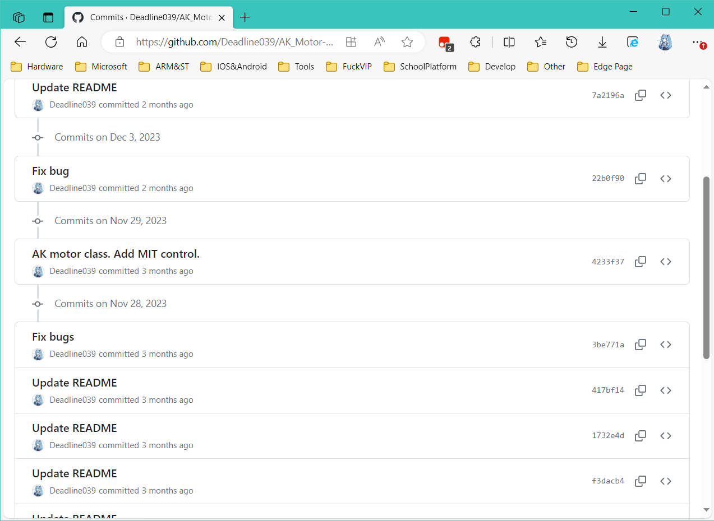

Git是一个开源的分布式版本控制系统，可以很方便的管理和控制软件版本，也可以很方便的进行多人协作。
Git是Linus在2005年4月发布的一款版本控制系统。Linus在开发Linux内核时，嫌弃当时的版本控制系统又难用还要钱。于是自己花了十天时间，写了Git用来Linux开发。
Git有Git GUI，可以以可视化的方式来使用，鼠标点几下就可以完成pull, commit和push的动作，我也经常用VSCode的版本控制来提交和上传代码。鼠标点几下确实比敲命令方便。但我建议大家必须学会命令行的操作，在企业里有时候是没有GUI让你用的，现在的大多数服务器都是不会安装GUI的，这时候如果你想用服务器提交代码的话必须用命令行，你没得选。
尽管命令行学起来头疼，这很正常，因为Git本身就是一个很Linux的东西，你不能用Windows的那一套思想去用这个东西。但是学会了以后会感觉很爽，你就会发现以前把压缩包发来发去真****。
这里有一个网站，玩一遍我相信你对Git的了解也就差不多了，https://learngitbranching.js.org/
Git Reference: https://git-scm.com/docs zh-cn: https://git-scm.com/book/zh/v2
一些学习资源，当然也可以自己找，非常多，这里就不讲了：
https://missing-semester-cn.github.io/2020/version-control/
https://www.bilibili.com/video/av802848210/
为什么使用Git
举个典型的例子，给甲方做项目。写了一个初稿，甲方不满意，然后在此基础上改出第二版，甲方说小改一下就行了，然后改到第N版，甲方说用初版。假如每次改版都会留上一个版本，那么可以很方便的回溯版本。如果甲方说整体还可以，但是要撤销之前的某个改动，那么可以查看每次的更改记录，找到后改回。如果是一个多人项目，那么可以像在线文档一样多人协作。
那么以上所说的几点功能，我相信大家如果用过像腾讯文档、金山文档这类的在线文档工具，应该都清楚。但大家有没有想过代码怎么像在线文档一样有版本回溯、多人协作呢？难道把代码放在一个Word文件里，然后大家创建一个在线文档一起写？可一个项目有非常多的源文件，管理起来也不方便。这样做显然不可能。因此对于源代码的版本控制工具，我们一般用Git。
那么Git与Github又有什么关系呢？大多数人会告诉你：Git是一个版本控制工具，而Github是代码托管平台。我估计有人可能搞不清楚这说的什么玩意。其实很简单，Git就是你在本地用来上传或者下载代码的工具，Github就是存储所有源代码、上传记录、历史版本的一个仓库。除了Github，还有Gitee(码云)，Gitlab，也是和Github一样是代码托管平台。当然也可以自己用服务器或者自己的电脑搭建一个Git服务器，都是可以的。使用起来无非就是仓库地址不一样，其他都一模一样。
大多数人会告诉你Git是一个分布式的版本控制系统，分布式是什么意思呢，也就是说代码不会只存在像Github托管平台的一个地方，所有人想要上传修改记录就先把仓库的代码全部下载下来，然后再更改后上传，这就是分布式的意义，每个电脑都有仓库里完整的源代码。
除了分布式，那我估计你也了猜到了，肯定还有个集中式版本控制系统（一般用SVN）。那集中式是什么意思，也很简单，就是所有源代码只存储在中心代码服务器上，修改代码的时候只在本地下载这一个文件，不会像Git一样把整个仓库代码下载下来。这样做的好处是安全性强，可以避免源码泄漏。相较于Git，SVN可以很好地控制文件权限，毕竟Git是为开源项目而设计的。
 提交记录
 提交快照
提交快照
 多人协作
多人协作